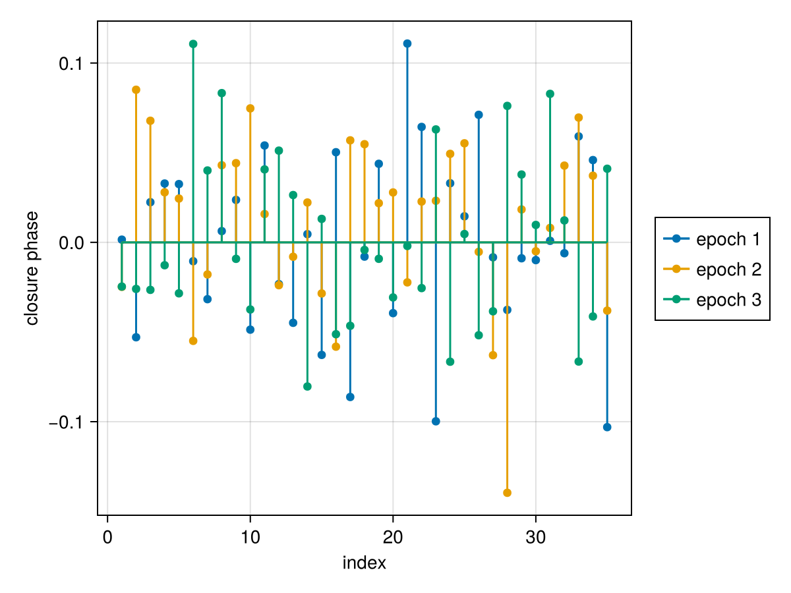
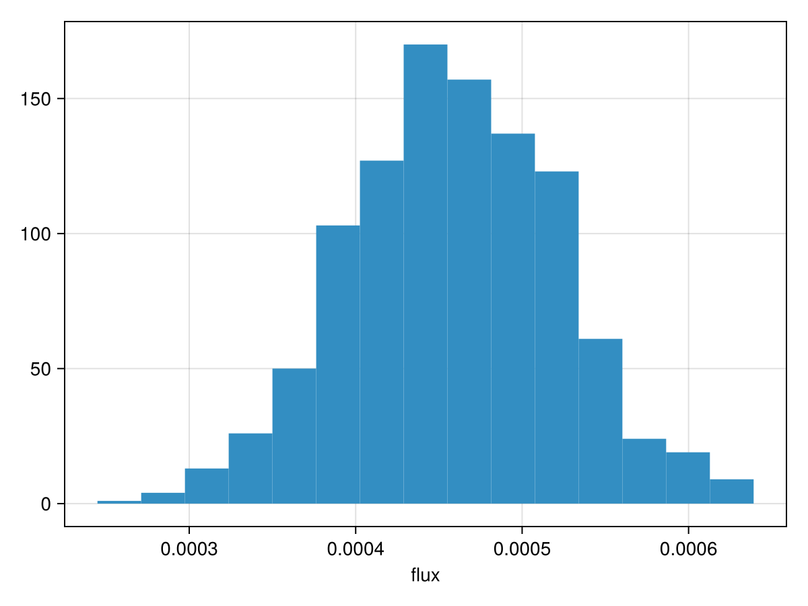
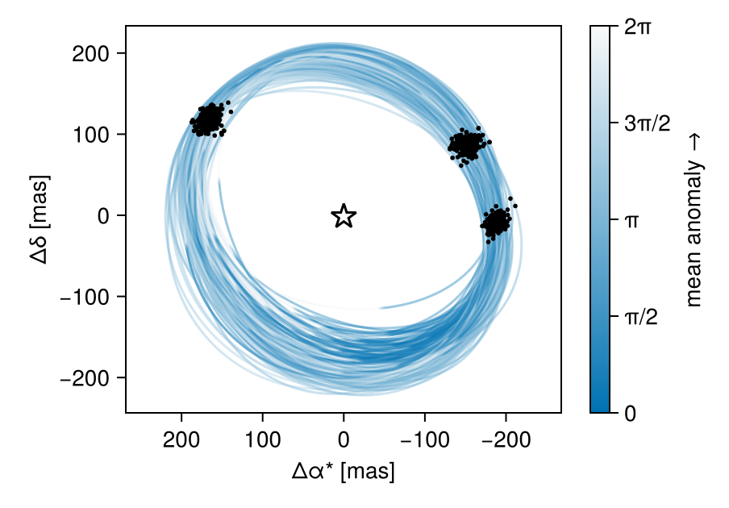
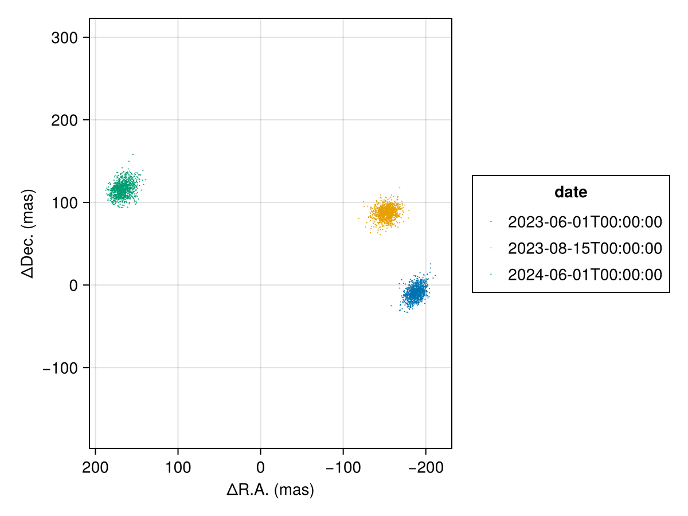
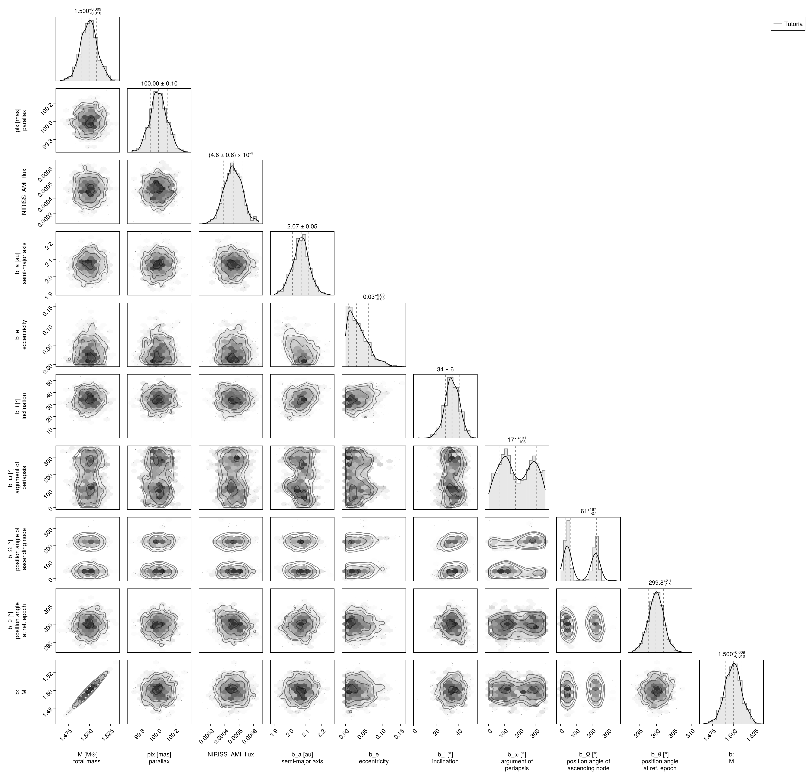

Fitting Interferometric Observables
In this tutorial, we fit a planet & orbit model to a sequence of interferometric observations. Closure phases and squared visibilities are supported.
We load the observations in OI-FITS format and model them as a point source orbiting a star.
Interferometer modelling is supported in Octofitter via the extension package OctofitterInterferometry. To install it, run pkg> add http://github.com/sefffal/Octofitter.jl:OctofitterInterferometry
using Octofitter
using OctofitterInterferometry
using Distributions
using CairoMakie
using PairPlotsPrecompiling packages...
Info Given OctofitterInterferometry was explicitly requested, output will be shown live
┌ Warning: Module Octofitter with build ID fafbfcfd-18b6-a9c8-8f98-639c10431b17 is missing from the cache.
│ This may mean Octofitter [daf3887e-d01a-44a1-9d7e-98f15c5d69c9] does not support precompilation but is imported by a module that does.
└ @ Base loading.jl:2643
558.2 ms ? OctofitterInterferometry
┌ Warning: Module Octofitter with build ID fafbfcfd-18b6-a9c8-8f98-639c10431b17 is missing from the cache.
│ This may mean Octofitter [daf3887e-d01a-44a1-9d7e-98f15c5d69c9] does not support precompilation but is imported by a module that does.
└ @ Base loading.jl:2643Download simulated JWST AMI observations from our examples folder on GitHub:
download("https://github.com/sefffal/Octofitter.jl/raw/main/examples/AMI_data/Sim_data_2023_1_.oifits", "Sim_data_2023_1_.oifits")
download("https://github.com/sefffal/Octofitter.jl/raw/main/examples/AMI_data/Sim_data_2023_2_.oifits", "Sim_data_2023_2_.oifits")
download("https://github.com/sefffal/Octofitter.jl/raw/main/examples/AMI_data/Sim_data_2024_1_.oifits", "Sim_data_2024_1_.oifits")"Sim_data_2024_1_.oifits"Create the likelihood object:
data = Table([
(; filename="Sim_data_2023_1_.oifits", epoch=mjd("2023-06-01"), use_vis2=false),
(; filename="Sim_data_2023_2_.oifits", epoch=mjd("2023-08-15"), use_vis2=false),
(; filename="Sim_data_2024_1_.oifits", epoch=mjd("2024-06-01"), use_vis2=false),
])
vis_obs = InterferometryObs(
data,
name="NIRISS-AMI",
variables=@variables begin
# For single planet:
flux ~ truncated(Normal(0, 0.1), lower=0) # Planet flux/contrast (array with one element)
# For multiple planets (array - one per planet):
# flux ~ Product([truncated(Normal(0, 0.1), lower=0), truncated(Normal(0, 0.1), lower=0)])
# Optional calibration parameters:
platescale = 1.0 # Platescale multiplier [could use: platescale ~ truncated(Normal(1, 0.01), lower=0)]
northangle = 0.0 # North angle offset in radians [could use: northangle ~ Normal(0, deg2rad(1))]
σ_cp_jitter = 0.0 # closure phase jitter [could use ~ LogUniform(0.1, 100))
end
)OctofitterInterferometry.InterferometryObs Table with 13 columns and 3 rows:
filename epoch use_vis2 u v eff_wave cps_data dcps ⋯
┌───────────────────────────────────────────────────────────────────────────────────────────────────────────────────────────────────────────────
1 │ Sim_data_2023_1_.oi… 60096.0 false [-3.46641e5; 6.7596… [-8.4391e5; -1.3675… [3.828e-6] [0.00152103; -0.052… [0.0385806; 0.03199… ⋯
2 │ Sim_data_2023_2_.oi… 60171.0 false [-3.46641e5; 6.7596… [-8.4391e5; -1.3675… [3.828e-6] [-0.0248125; 0.0851… [0.0385806; 0.03199… ⋯
3 │ Sim_data_2024_1_.oi… 60462.0 false [-3.46641e5; 6.7596… [-8.4391e5; -1.3675… [3.828e-6] [-0.0246675; -0.025… [0.0385806; 0.03199… ⋯If you want to include multiple bands, group these into different InterferometryObs objects with different instrument names (i.e. include the band in the name for the sake of bookkeeping)
Plot the closure phases:
fig = Makie.Figure()
ax = Axis(
fig[1,1],
xlabel="index",
ylabel="closure phase",
)
Makie.stem!(
vis_obs.table.cps_data[1][:],
label="epoch 1",
)
Makie.stem!(
vis_obs.table.cps_data[2][:],
label="epoch 2"
)
Makie.stem!(
vis_obs.table.cps_data[3][:],
label="epoch 3"
)
Makie.Legend(fig[1,2], ax)
fig
planet_b = Planet(
name="b",
basis=Visual{KepOrbit},
observations=[],
variables=@variables begin
M = system.M
a ~ truncated(Normal(2,0.1), lower=0.1)
e ~ truncated(Normal(0, 0.05),lower=0, upper=0.90)
i ~ Sine()
ω ~ UniformCircular()
Ω ~ UniformCircular()
θ ~ UniformCircular()
tp = θ_at_epoch_to_tperi(θ, 60171; M, e, a, i, ω, Ω) # reference epoch for θ. Choose an MJD date near your data.
end
)
sys = System(
name="Tutoria",
companions=[planet_b],
observations=[vis_obs],
variables=@variables begin
M ~ truncated(Normal(1.5, 0.01), lower=0.1)
plx ~ truncated(Normal(100., 0.1), lower=0.1)
end
)System model Tutoria
Derived:
Priors:
M ~ Truncated(Distributions.Normal{Float64}(μ=1.5, σ=0.01); lower=0.1)
plx ~ Truncated(Distributions.Normal{Float64}(μ=100.0, σ=0.1); lower=0.1)
Planet b
Derived:
ω = (atan(ωy, ωx) / (2π)) * 6.283185307179586
Ω = (atan(Ωy, Ωx) / (2π)) * 6.283185307179586
θ = (atan(θy, θx) / (2π)) * 6.283185307179586
M = system.M
tp = θ_at_epoch_to_tperi(θ, 60171; M, e, a, i, ω, Ω)
Priors:
a ~ Truncated(Distributions.Normal{Float64}(μ=2.0, σ=0.1); lower=0.1)
e ~ Truncated(Distributions.Normal{Float64}(μ=0.0, σ=0.05); lower=0.0, upper=0.9)
i ~ Sine()
ωx ~ Distributions.Normal{Float64}(μ=0.0, σ=1.0)
ωy ~ Distributions.Normal{Float64}(μ=0.0, σ=1.0)
Ωx ~ Distributions.Normal{Float64}(μ=0.0, σ=1.0)
Ωy ~ Distributions.Normal{Float64}(μ=0.0, σ=1.0)
θx ~ Distributions.Normal{Float64}(μ=0.0, σ=1.0)
θy ~ Distributions.Normal{Float64}(μ=0.0, σ=1.0)
Octofitter.UnitLengthPrior{:ωx, :ωy}: √(ωx^2+ωy^2) ~ LogNormal(log(1), 0.02)
Octofitter.UnitLengthPrior{:Ωx, :Ωy}: √(Ωx^2+Ωy^2) ~ LogNormal(log(1), 0.02)
Octofitter.UnitLengthPrior{:θx, :θy}: √(θx^2+θy^2) ~ LogNormal(log(1), 0.02)
OctofitterInterferometry.InterferometryObs Table with 13 columns and 3 rows:
filename epoch use_vis2 u v eff_wave cps_data dcps ⋯
┌───────────────────────────────────────────────────────────────────────────────────────────────────────────────────────────────────────────────
1 │ Sim_data_2023_1_.oi… 60096.0 false [-3.46641e5; 6.7596… [-8.4391e5; -1.3675… [3.828e-6] [0.00152103; -0.052… [0.0385806; 0.03199… ⋯
2 │ Sim_data_2023_2_.oi… 60171.0 false [-3.46641e5; 6.7596… [-8.4391e5; -1.3675… [3.828e-6] [-0.0248125; 0.0851… [0.0385806; 0.03199… ⋯
3 │ Sim_data_2024_1_.oi… 60462.0 false [-3.46641e5; 6.7596… [-8.4391e5; -1.3675… [3.828e-6] [-0.0246675; -0.025… [0.0385806; 0.03199… ⋯
Create the model object and run octofit_pigeons:
model = Octofitter.LogDensityModel(sys)
using Pigeons
results,pt = octofit_pigeons(model, n_rounds=10);[ Info: Preparing model
┌ Info: Determined number of free variables
└ D = 12
┌ Info: Determined number type
└ T = Float64
ℓπcallback(θ): 0.000034 seconds (18 allocations: 3.609 KiB)
∇ℓπcallback(θ): 0.000094 seconds (25 allocations: 25.531 KiB)
┌ Warning: This model has priors that cannot be sampled IID.
└ @ OctofitterPigeonsExt ~/octo-maintenance/runner/actions-runner/_work/Octofitter.jl/Octofitter.jl/ext/OctofitterPigeonsExt/OctofitterPigeonsExt.jl:110
[ Info: Sampler running with multiple threads : true
[ Info: Likelihood evaluated with multiple threads: false
┌ Info: Starting values not provided for all parameters! Guessing starting point using global optimization:
│ num_params = 12
└ num_fixed = 0
┌ Warning: Verbosity toggle: unrecognized_stop_reason
│ Unrecognized stop reason: Too many steps (101) without any function evaluations (probably search has converged). Defaulting to ReturnCode.Default.
└ @ OptimizationBase ~/.julia/packages/OptimizationBase/y1GZt/src/utils.jl:170
┌ Warning: Pathfinder error: MethodError(copy, (SplittableRandoms.SplittableRandom(0x40217369371b08d2, 0xaabf13ae126f9159),), 0x000000000000a403)
└ @ Octofitter ~/octo-maintenance/runner/actions-runner/_work/Octofitter.jl/Octofitter.jl/src/initialization.jl:956
┌ Warning: Using BBO result as fallback
└ @ Octofitter ~/octo-maintenance/runner/actions-runner/_work/Octofitter.jl/Octofitter.jl/src/initialization.jl:957
┌ Info: Found sample of initial positions
│ logpost_range = (196.79256809922833, 196.79256809922833)
└ mean_logpost = 196.79256809922836
────────────────────────────────────────────────────────────────────────────────────────────────────────────────────────
scans restarts Λ Λ_var time(s) allc(B) log(Z₁/Z₀) min(α) mean(α) min(αₑ) mean(αₑ)
────────── ────────── ────────── ────────── ────────── ────────── ────────── ────────── ────────── ────────── ──────────
2 0 4.13 4.06 0.376 8.46e+07 97.8 0 0.736 1 1
4 0 5.59 4.83 0.444 1.39e+08 178 0 0.664 1 1
8 0 4.54 4.71 0.701 2.77e+08 27.2 8.33e-190 0.702 1 1
16 0 6.1 5.51 1.35 5.53e+08 154 7.51e-23 0.625 1 1
32 0 6.22 5.53 2.69 1.1e+09 177 3.25e-07 0.621 1 1
64 6 6.42 2.46 5.75 2.31e+09 176 0.11 0.714 1 1
128 18 6.49 2.45 11.2 4.66e+09 176 0.148 0.712 1 1
256 33 6.72 2.7 22.8 9.31e+09 176 0.27 0.696 1 1
512 70 6.69 2.6 45.9 1.86e+10 176 0.381 0.7 1 1
1.02e+03 143 6.88 2.67 93.6 3.72e+10 176 0.494 0.692 1 1
────────────────────────────────────────────────────────────────────────────────────────────────────────────────────────Note that we use Pigeons paralell tempered sampling (octofit_pigeons) instead of HMC (octofit) because interferometry data is almost always multi-modal (or more precisely non-convex, there is often still a single mode that dominates).
Examine the recovered photometry posterior:
hist(results[:NIRISS_AMI_flux][:], axis=(;xlabel="flux"))
Determine the significance of the detection:
using Statistics
phot = results[:NIRISS_AMI_flux][:]
snr = mean(phot)/std(phot)7.2626529089634095Plot the resulting orbit:
octoplot(model, results)
Plot only the position at each epoch:
using PlanetOrbits
els = Octofitter.construct_elements(model, results,:b,:);
fig = Makie.Figure()
ax = Makie.Axis(
fig[1,1],
autolimitaspect = 1,
xreversed=true,
xlabel="ΔR.A. (mas)",
ylabel="ΔDec. (mas)",
)
for epoch in vis_obs.table.epoch
Makie.scatter!(
ax,
raoff.(els, epoch)[:],
decoff.(els, epoch)[:],
label=string(mjd2date(epoch)),
markersize=1.5,
)
end
Makie.Legend(fig[1,2], ax, "date")
fig
Finally we can examine the joint photometry and orbit posterior as a corner plot:
using PairPlots
using CairoMakie: Makie
octocorner(model, results)